Every factual claim is traced to a slide I read visually, cited as [Slide: chN s.NN]. No lecture audio was provided, so there are no [Lec] citations. The amber boxes are a plain-English tutor layer and carry no citations on purpose.
Built from deck "malhotra 01_essentials 1E.pptx", 16 slides, read visually. [Slide: ch1 s.1]
Running example (used across all three chapters): Layla owns "Mango Fresh," a small smoothie shop. Lately her sales have slipped and she doesn't know why. Should she change prices? Open a second branch? Run ads? She is about to discover that guessing is expensive, and that there is a disciplined way to get answers. That disciplined way is marketing research.
Marketing research is just a careful, honest way of collecting and using information to make better business decisions. Instead of Layla trusting her gut ("I feel like prices are too high"), she gathers real facts, studies them, and lets the facts guide her. The textbook lists five verbs for what research does: it identifies what information is needed, collects it, analyses it, disseminates (shares) the findings, and then those findings get used to make a decision. Memorize the chain: Identify → Collect → Analyse → Share → Use.
Once Layla accepts that research helps, there are exactly two situations she might be in. Either something is wrong and she doesn't even know what ("sales are down, but why?") — that is problem-identification research, the detective work that finds hidden problems. Or she already knows the problem and needs to fix it ("I know I must re-price the mango smoothie, how should I?") — that is problem-solving research, the repair work. Identification finds the problem; solving fixes it.
When Layla moves to fixing things, her choices fall into four buckets that marketers call the 4 Ps: Product, Price, Promotion, and Place (distribution), and you add Segmentation (which customers to target) on top. So "solving research" might mean studying her menu (product), her prices, her advertising (promotion), or where/how she sells (place). Every fix she could make is really a question about one of these.
Whatever the question, professionals follow the same six steps in order, like a recipe: (1) define the problem, (2) develop an approach, (3) design the research, (4) collect the data, (5) analyse it, (6) write the report. Notice step 1 is "define the problem" — that is so important it gets all of Chapter 2. And step 3, "design the research," gets all of Chapter 3. So Chapters 1, 2 and 3 are really just zooming in on the front half of this one recipe.
Why does any of this matter? Because research is the bridge between Layla's customers (and the messy outside world she can't control: the economy, competitors, the law) and the decisions she can control (her 4 Ps). Research feeds her decision-making with facts so her controllable choices actually fit the uncontrollable world. It assesses what she needs to know, and then provides it.
Finally, research can be done internally (Layla and her staff) or bought from external firms. Big external firms come in two flavours: full-service (they do the whole project) and limited-service (they do one piece, like running the field interviews). There is a whole global industry of these companies — Nielsen, Kantar, Ipsos and so on — earning billions. Layla is a tiny customer of a giant ecosystem.
Layla learns that research (Identify→Collect→Analyse→Share→Use) is done either to find a hidden problem or to solve a known one; that solving lives inside the 4 Ps; that every project follows the same six-step recipe; that research is the bridge between her uncontrollable world and her controllable decisions; and that she can do it herself or hire one of many specialist firms. Chapter 2 now zooms into step 1 (defining the problem) and Chapter 3 into step 3 (designing the research).
Marketing research is the systematic, objective process of identifying, collecting, analysing, disseminating, and using information to make better marketing decisions — done either to identify hidden problems or to solve known ones, following a fixed six-step process, and supplied by an internal team or an external industry. [Slide: ch1 s.2] [Slide: ch1 s.10]
This chapter answers four beginner questions: What is marketing research? What kinds are there? How is a project actually run, step by step? And who in the world does this work? It does not yet teach you how to do any single step — that is what later chapters are for. Think of Chapter 1 as the map you look at before the journey: it shows the whole territory so the detailed chapters make sense.
The deck gives a formal, deliberately precise definition. It is worth knowing the exact wording because the five verbs in the middle are frequently tested.
Marketing Research is the systematic and objective identification, collection, analysis, dissemination, and use of information, for the purpose of improving decision making related to the identification and solution of problems and opportunities in marketing. [Slide: ch1 s.2]
Two words in that definition do a lot of work. Systematic means the research is planned and orderly, not random poking around. Objective means it is unbiased — you collect the data honestly even if the answer is not the one you were hoping for. The five activities form a pipeline, and the slide draws them as a downward staircase: information needed → collection of data → analysis of data → dissemination of information → use of information. [Slide: ch1 s.3]
Recreation of Figure 1.1, "Defining Marketing Research." The slide pairs this staircase with a side caption, "Identifying and Solving Marketing Problems," signalling that the whole pipeline exists to do those two things. [Slide: ch1 s.3]
A closely related slide, simply titled "Market Research," restates the same idea as the researcher's four duties: marketing research specifies the information needed to address the issues, manages and implements the data-collection process, analyses the results, and communicates the findings and their implications. [Slide: ch1 s.4] Notice this is the same pipeline seen from the researcher's chair rather than the activity's.
The single most testable distinction in the chapter. All marketing research splits into two classes depending on why you are doing it.
Problem-Identification Research: research undertaken to help identify problems which are not necessarily apparent on the surface and yet exist or are likely to arise in the future. Examples: market potential, market share, image, market characteristics, sales analysis, forecasting, and trends research. [Slide: ch1 s.5]
Problem-Solving Research: research undertaken to help solve specific marketing problems. Examples: segmentation, product, pricing, promotion, and distribution research. [Slide: ch1 s.5]
In plain terms: identification research is the smoke detector — it tells you there is a fire (or soon will be) even when you can't see flames. Solving research is the firefighter — once you know what is burning, it tells you how to put it out. Layla's "my sales are down but I don't know why" is identification; her later "I've decided to re-price, now how exactly?" is solving.
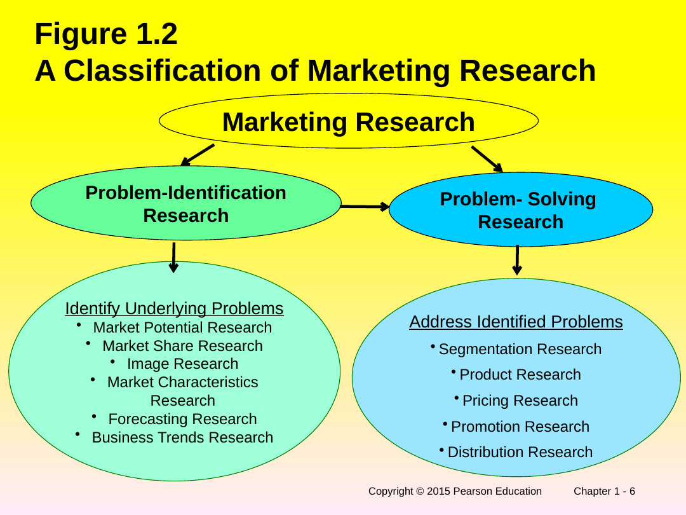
Both branches descend from a single "Marketing Research" node at the top, and an arrow runs from the identification branch to the solving branch — you usually identify first, then solve. [Slide: ch1 s.6]
The deck spends three slides drilling into the five sub-types of problem-solving research. These map onto the marketing mix (the "4 Ps": Product, Price, Promotion, Place/Distribution) plus Segmentation.
| Sub-type | What it studies (from the slides) |
|---|---|
| Segmentation Research | Determine the basis of segmentation; establish market potential and responsiveness for various segments; select target markets; create lifestyle profiles (demography, media, and product-image characteristics). [Slide: ch1 s.7] |
| Product Research | Test concept; determine optimal product design; package tests; product modification; brand positioning and repositioning; test marketing; control score tests. [Slide: ch1 s.7] |
| Pricing Research | Pricing policies; importance of price in brand selection; product-line pricing; price elasticity of demand; initiating and responding to price changes. [Slide: ch1 s.8] |
| Promotional Research | Optimal promotional budget; sales-promotion relationship; optimal promotional mix; copy decisions; media decisions; creative advertising testing; evaluation of advertising effectiveness; claim substantiation. [Slide: ch1 s.8] |
| Distribution Research | Determines types of distribution, attitudes of channel members, intensity of wholesale & resale coverage, channel margins, and location of retail and wholesale outlets. [Slide: ch1 s.9] |
Each slide carries a real-world callout box, and these are gold for remembering the concept:
So when Layla finally decides to act on her smoothie problem, whatever she does is one of these five: re-targeting customers (segmentation), reworking the menu (product), changing prices (pricing), advertising differently (promotion), or changing where/how she sells (distribution).
This is the backbone of the entire course. Every later chapter is "here is how to do step N well." Memorise the six steps in order.
Recreation of Figure 1.3, "The Marketing Research Process." [Slide: ch1 s.10]
Step 3 (Formulating a Research Design) is itself a bundle of eight tasks, which the slide "enlarges" on the next page. These eight reappear as the table of contents for the rest of the book:
| # | Step-3 sub-task |
|---|---|
| 1 | Secondary & Syndicated Data Analysis |
| 2 | Qualitative Research |
| 3 | Survey & Observation Research |
| 4 | Experimental Research |
| 5 | Measurement & Scaling |
| 6 | Questionnaire & Form Design |
| 7 | Sampling Process & Sample Size |
| 8 | Preliminary Plan of Data Analysis |
The "Step 3 enlarged" slide lists all eight sub-tasks inside a single box. [Slide: ch1 s.11]
A separate concept-map slide (Figure 1.9) redraws the whole six-step process as a flowchart and adds that after the report and follow-up, the project may "begin a new cycle" or "lead to another project" — research is a loop, not a one-shot. [Slide: ch1 s.16]
Figure 1.4 places marketing research at the centre of a wheel. On the outside sit things the manager cannot control and things she can; research is the hub that connects them by feeding the decision.
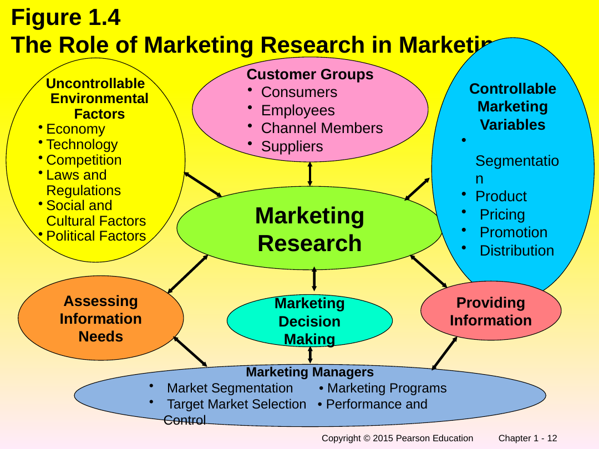
Reading the figure in words: Marketing Research sits in the middle and links three outer groups to Marketing Decision Making:
Research plays two roles in the loop: assessing information needs and providing information, and the marketing managers then use it for market segmentation, target-market selection, marketing programs, and performance & control. [Slide: ch1 s.12] The takeaway: research is not a side activity, it is the information engine in the middle of every marketing decision.
Research is either produced internally (by a department inside the company) or bought from external suppliers, and the external world divides into full-service and limited-service firms.
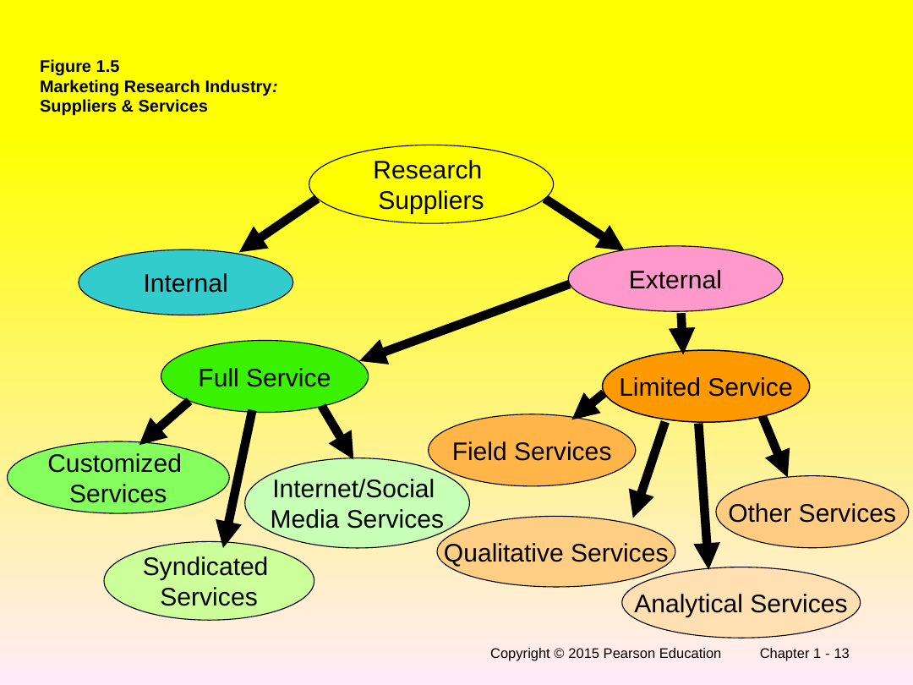
A research function inside the company itself.
The supplier list is given on Figure 1.5 (the tree) and restated on the "Marketing Research Suppliers & Services" slide, which adds a callout: "Burke is well known for its customized services." [Slide: ch1 s.13] [Slide: ch1 s.14]
Finally, Table 1.1 lists the ten largest research organisations in the world. The revenue column is worth seeing as a chart, because the drop-off from Nielsen to the rest is dramatic.
| Rank 2012 | Rank 2011 | Organization | Headquarters | Parent country | Website | No. of countries with subsidiaries / branch offices | Global revenue (USD m) | % of global revenue from outside home country |
|---|---|---|---|---|---|---|---|---|
| 1 | 1 | Nielsen Holdings | New York | U.S. | Nielsen.com | 100 | 5,429.0 | 51.2 |
| 2 | 2 | Kantar | London & Fairfield, Conn. | U.K. | Kantar.com | 80 | 3,338.6 | 72.2 |
| 3 | 3 | Ipsos Group SA | Paris | France | Ipsos.com | 85 | 2,301.1 | 93.2 |
| 4 | 4 | GfK SE | Nuremberg | Germany | Gfk.com | 68 | 1,947.8 | 70.0 |
| 5 | 6 | IMS Health Inc. | Parsippany, N.J. | U.S. | Imshealth.com | 74 | 775.0 | 65.0 |
| 6 | 5 | Information Resources | Chicago | U.S. | IRIworldwide.com | 8 | 763.8 | 37.3 |
| 7 | 8 | INTAGE Inc. | Tokyo | Japan | Intage.co.jp | 7 | 500.3 | 2.6 |
| 8 | 7 | Westat Inc. | Rockville, Md. | U.S. | Westat.com | 8 | 495.9 | 1.0 |
| 9 | 9 | Arbitron Inc. | Columbia, VA | U.S. | Arbitron.com | 3 | 449.9 | 1.3 |
| 10 | 10 | The NPD Group | Port Washington, N.Y. | U.S. | NPD.com | 13 | 272.0 | 29.5 |
Every cell reproduced verbatim from Table 1.1. [Slide: ch1 s.15]
| Concept A | Concept B | Key difference |
|---|---|---|
| Problem-identification research | Problem-solving research | Identification finds a problem that is not obvious (market potential, share, forecasting, trends); solving fixes a known problem (segmentation, product, price, promotion, distribution). [Slide: ch1 s.5] |
| Uncontrollable environmental factors | Controllable marketing variables | Uncontrollable = economy, technology, competition, laws, social/cultural, political. Controllable = the marketing mix (segmentation, product, price, promotion, distribution). Research links the two. [Slide: ch1 s.12] |
| Full-service supplier | Limited-service supplier | Full-service firms can run the whole project (syndicated, standardized, customized, internet). Limited-service firms do one slice (field, qualitative, analytical, other). [Slide: ch1 s.14] |
| "Marketing research" | "Market research" | The slides use them almost interchangeably, but "marketing research" is the broad discipline (all marketing decisions) while "market research" colloquially leans toward studying a specific market. The formal definition is for marketing research. [Slide: ch1 s.2] [Slide: ch1 s.4] |
| Slide | Banner / title | Portal section |
|---|---|---|
| 1 | Chapter 1 title — Introduction to Marketing Research | Chapter header |
| 2 | Definition of Marketing Research | §1 (verbatim definition) |
| 3 | Figure 1.1 Defining Marketing Research | §1 (staircase flow) |
| 4 | Market Research (researcher's four duties) | §1 |
| 5 | Classification of Marketing Research | §2 (both verbatim definitions) |
| 6 | Figure 1.2 A Classification of Marketing Research | §2 (branch diagram) |
| 7 | Problem-Solving Research (Segmentation, Product) | §3 (table rows) |
| 8 | Problem-Solving Research Cont. (Pricing, Promotional) | §3 (table rows + Unilever callout) |
| 9 | Problem-Solving Research Cont. (Distribution) | §3 (table row + Wal-Mart callout) |
| 10 | Figure 1.3 The Marketing Research Process | §4 (six-step flow) |
| 11 | Step 3 enlarged (8 sub-tasks) | §4 (eight-task table) |
| 12 | Figure 1.4 The Role of Marketing Research | §5 (figure + word breakdown) |
| 13 | Figure 1.5 Industry: Suppliers & Services | §6 (figure + branch cards) |
| 14 | Marketing Research Suppliers & Services | §6 (Burke callout) |
| 15 | Table 1.1 Top 10 Global Research Organizations | §6 (chart + full table) |
| 16 | Figure 1.9 Concept Map for the MR Process | §4 (loop / new-cycle note) |
Built from deck "malhotra 02_essentials 1E.pptx", 31 slides, read visually. [Slide: ch2 s.1]
Running example (continued): Layla's sales at Mango Fresh are down. In Chapter 1 she learned there is a six-step recipe. This chapter is all about step 1 — and it turns out "defining the problem" is the hardest and most important step of the whole project. Get it wrong and every later step, however well executed, answers the wrong question.
Layla's first instinct is "my problem is that sales are down." But falling sales is a symptom, like a fever. The real cause could be anything: a new competitor, a tired menu, bad weather, a price that feels too high. If she researches the symptom ("how do I boost this month's sales?") she'll get a band-aid. The whole chapter exists to push her from the symptom to the underlying cause.
To define the problem properly, you do four things: talk to the decision-makers (here, Layla herself and her manager), interview industry experts (a smoothie-industry veteran, a supplier), analyse secondary data (existing reports, her own past sales records), and run a little qualitative research (chat with a few customers). Together these reveal the environmental context — everything going on around the problem.
A problem audit is a thorough interview with the decision-maker that walks through the history of the problem, the options available, how each will be judged, and how the answer will actually be used. And because all of this depends on the researcher and the manager getting along, the book lists seven Cs of a healthy researcher–manager relationship (Communication, Cooperation, Confidence, Candor, Closeness, Continuity, Creativity). If Layla hires a researcher who never really listens to her, the project is doomed before it starts.
Before defining anything, the researcher scans the environmental context, summarised by the acronym PROBLEM: Past information, Resources/constraints, Objectives of the decision-maker, Buyer behaviour, Legal environment, Economic environment, Marketing & technological skills. For Layla: what do past sales show? what's her budget? what does she actually want? how do smoothie buyers behave? any regulations? the local economy? her own marketing know-how?
Now the key idea. There are two problems hiding inside every project. The Management Decision Problem (MDP) asks what the decision-maker needs to do — it is action-oriented ("Should Layla lower her prices?"). The Marketing Research Problem (MRP) asks what information is needed and how to get it — it is information-oriented ("Determine the price elasticity of demand for Mango Fresh smoothies"). The MDP focuses on symptoms; the MRP focuses on underlying causes. Translating the MDP into a good MRP is the core skill of this chapter.
A good marketing research problem is stated twice: once as a broad statement (general, gives perspective) and then broken into specific components (the exact sub-questions to research). Too broad and you have no guidance; too narrow and you miss things. It's like Goldilocks — you want it just right.
Step 2 of the recipe. Having defined what to research, Layla's researcher now decides how to think about it: build an analytical framework and models (a theory of what drives smoothie sales), turn the components into research questions (refined sub-questions) and hypotheses (educated guesses at the answers, to be tested), and finally write down the specification of information needed for each component. Now, and only now, is she ready for Chapter 3, where she designs the actual study.
Layla moves from a symptom (sales down) to a properly defined problem by doing four tasks, auditing the problem, and scanning the PROBLEM context; she separates the action-oriented Management Decision Problem from the information-oriented Marketing Research Problem; she states that research problem broadly and then in specific components; and finally she develops an approach (framework → models → research questions → hypotheses → information needed). That hand-off — a defined problem plus an approach — is exactly the input Chapter 3 needs to design the study.
Before any data is collected you must convert a vague management symptom into a precisely defined, information-oriented marketing research problem — stated broadly and then in specific components — and wrap it in an "approach" of frameworks, models, research questions, and hypotheses. [Slide: ch2 s.13] [Slide: ch2 s.17]
Chapter 1 said step 1 of the process is "define the problem." This chapter is the entire how-to for that step (plus step 2, "develop an approach"). Its big warning is that beginners define the symptom instead of the cause, and its big tool is the split between the management decision problem (what to do) and the marketing research problem (what to find out). Almost everything else hangs off that one distinction.
The deck opens by replaying the six-step process from Chapter 1 and putting an arrow next to Step 1 (Defining the Problem) and Step 2 (Developing an Approach) — the two steps this chapter owns. [Slide: ch2 s.2] Step 3 and beyond stay greyed out for later chapters. [Slide: ch2 s.3]
Figure 2.2 then gives the master map for the chapter, which is worth holding in your head as you read:
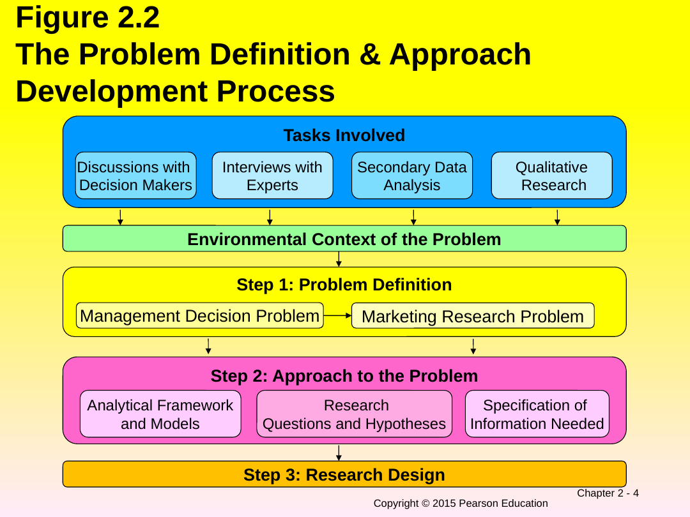
In words, the figure stacks five layers, each feeding the one below:
Every box and arrow above is reproduced from Figure 2.2. [Slide: ch2 s.4]
Four tasks turn a vague worry into a defined problem. The deck bolds the source of each.
| Task | What it is |
|---|---|
| Discussions with Decision Makers | The problem definition begins here. You sit with the people who will act on the research. [Slide: ch2 s.5] |
| Interviews with Industry Experts | People who know the industry but are outside the immediate decision. [Slide: ch2 s.5] |
| Secondary Data Analysis | Information that already exists (covered in depth in Chapter 3). [Slide: ch2 s.5] |
| Qualitative Research | Small-scale, open-ended exploration like focus groups (covered in Chapter 4). [Slide: ch2 s.5] |
The problem audit is a structured, comprehensive interview with the decision-maker, defined on the slide:
The problem audit is a comprehensive examination of a marketing problem with the purpose of understanding its origin and nature. [Slide: ch2 s.6]
It works through seven issues. Reproduced exactly, the audit asks about:
The same seven appear redrawn as a vertical flow on the "Conducting a Problem Audit" slide (History of the Problem → Alternative Courses of Action → Criteria for Evaluating → Nature of Potential Actions → Information Needed → How Each Item Will Be Used → Corporate Decision-Making Culture). [Slide: ch2 s.9]
Because the audit depends on a good working relationship, the deck lists the Seven Cs of Interaction between the decision-maker and researcher:
Before defining the problem you study the environment around it. Figure 2.4 lists seven factors, and a later slide packages them into the acronym PROBLEM.
Recreation of Figure 2.4, "Factors to be Considered in the Environment Context of the Problem." [Slide: ch2 s.12]
This is the heart of the chapter and the most exam-heavy idea in it. Read it twice.
| Management Decision Problem (MDP) | Marketing Research Problem (MRP) |
|---|---|
| Asks what the decision maker needs to do | Asks what information is needed and how it should be obtained |
| Action oriented | Information oriented |
| Focuses on symptoms | Focuses on the underlying causes |
Reproduced verbatim from Table 2.2. [Slide: ch2 s.13]
Worked examples from Table 2.3 — notice how each "should we…?" (action) becomes a "determine…" (information):
| Management Decision Problem | Corresponding Marketing Research Problem |
|---|---|
| Should a new product be introduced? | To determine consumer preferences and purchase intentions for the proposed new product. [Slide: ch2 s.14] |
| Should the advertising campaign be changed? | To determine the effectiveness of the current advertising campaign. [Slide: ch2 s.14] |
| Should the price of the brand be increased? | To determine the price elasticity of demand and the impact on sales and profits of various levels of price changes. [Slide: ch2 s.14] |
| Should Harley-Davidson invest to produce more motorcycles? | To determine if customers would be loyal buyers of Harley-Davidson in the long term. [Slide: ch2 s.15] |
Why the distinction matters so much: defining by symptoms can be dangerously misleading. Table 2.1 gives two cautionary cases — what customers say is not the real cause.
| Firm | Symptom | Definition based on symptom (wrong focus) | Definition based on underlying cause (right focus) |
|---|---|---|---|
| Manufacturer of orange soft drinks | Consumers say the sugar content is too high | Determine consumer preferences for alternative levels of sugar content | Color. The color of the drink is a dark shade of orange, giving the perception that the product is too "sugary." [Slide: ch2 s.11] |
| Manufacturer of machine tools | Customers complain prices are too high | Determine the price elasticity of demand | Channel management. Distributors do not have adequate product knowledge to communicate product benefits to customers. [Slide: ch2 s.11] |
The deck also retells this as a conversation: the decision-maker focuses on the symptom ("loss of market share") while the researcher probes underlying causes (superior promotion by competition, inadequate distribution, lower product quality, price undercutting). [Slide: ch2 s.10]
Figure 2.7 ties the symptoms / causes / MDP / MRP relationships into one picture: underlying causes create symptoms, symptoms drive the management decision problem, which leads to the marketing research problem, which is expressed as a broad statement and specific components. [Slide: ch2 s.18]
A properly defined marketing research problem is stated at two levels. Figure 2.6 shows the marketing research problem flowing down into a broad statement and then into specific components (Component 1, 2, 3 …).
Recreation of Figure 2.6, "Proper Definition of the Marketing Research Problem." [Slide: ch2 s.17]
The danger is defining it at the wrong width. Figure 2.5 names the two errors:
Reproduced from Figure 2.5, "Errors in Defining the Market Research Problem." [Slide: ch2 s.16]
The book's running case is Harley-Davidson:
Management Decision Problem: Should Harley-Davidson invest to produce more motorcycles?
Marketing Research Problem (Broad Statement): To determine if customers would be loyal buyers of Harley-Davidson in the long term. [Slide: ch2 s.19]
Broken into specific components: (1) Who are the customers — their demographic and psychographic (lifestyle) characteristics? (2) Can different types of customers be distinguished — is meaningful segmentation possible? (3) How do customers feel about their Harleys — are all motivated by the same appeal? (4) Are customers loyal to Harley-Davidson — what is the extent of brand loyalty? [Slide: ch2 s.20]
With the problem defined, Step 2 builds the "approach." The deck lists three components:
Models. An analytical model is a set of variables and their interrelationships designed to represent, in whole or in part, some real system or process. [Slide: ch2 s.22] Models come in different forms; the deck highlights graphical models, which are visual and used to isolate variables and suggest directions of relationships but are not designed to provide numerical results. [Slide: ch2 s.23] Its example is a consumer-response chain:
Graphical-model example from the "Graphical Models" slide. [Slide: ch2 s.23]
Research questions and hypotheses. The definitions to memorise:
Research questions (RQs) are refined statements of the specific components of the problem. [Slide: ch2 s.25]
A hypothesis (H) is an unproven statement or proposition about a factor or phenomenon that is of interest to the researcher. Often, a hypothesis is a possible answer to the research question. [Slide: ch2 s.25]
Figure 2.8 shows the flow: the components of the marketing research problem become research questions, which become hypotheses — and the analytical framework and models feeds into both the research questions and the hypotheses. [Slide: ch2 s.24]
The Harley-Davidson example again makes it concrete:
RQ: Can the motorcycle buyers be segmented based on psychographic characteristics?
H1: There are distinct segments of motorcycle buyers.
H2: Each segment is motivated to own a Harley for a different reason.
H3: Brand loyalty is high among Harley-Davidson customers in all segments. [Slide: ch2 s.26]
Specification of information needed. By focusing on each component of the problem and the framework, models, research questions, and hypotheses, the researcher can determine exactly what information should be obtained. [Slide: ch2 s.27] Figure 2.9 lays this out as four parallel columns — for each component of the problem you derive its RQs, then its hypotheses, then the info needed:
Recreation of Figure 2.9, "Specification of Information Needed" (the slide draws these as four side-by-side columns, each split per component 1…n). [Slide: ch2 s.28]
Two concept-map slides (Figures 2.11 and 2.12) summarise the whole chapter. They are visually dense, so they are embedded here with a word summary beneath each.
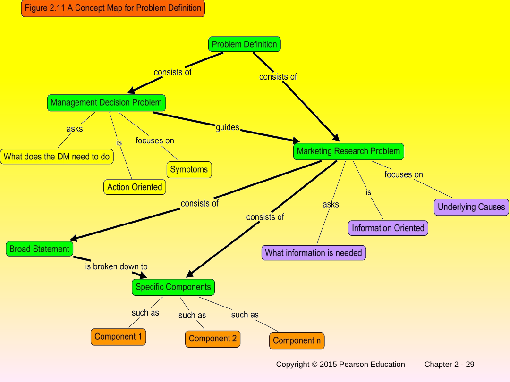
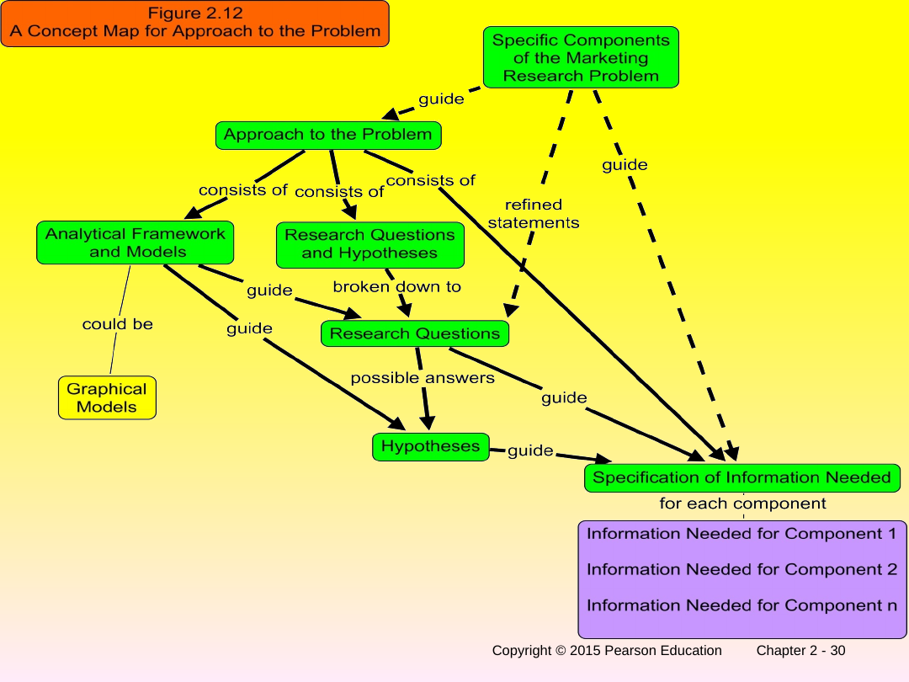
| Concept A | Concept B | Key difference |
|---|---|---|
| Management Decision Problem | Marketing Research Problem | MDP = what to do, action-oriented, on symptoms ("Should we raise price?"). MRP = what to find out, information-oriented, on causes ("Determine price elasticity of demand"). [Slide: ch2 s.13] |
| Symptom | Underlying cause | Falling market share is a symptom; the cause may be competitor promotion, poor distribution, quality, or price undercutting. Defining research on the symptom misleads. [Slide: ch2 s.10] [Slide: ch2 s.11] |
| Definition too broad | Definition too narrow | Too broad = no guidance for next steps ("improve the image"). Too narrow = misses important components. Aim for a broad statement + specific components. [Slide: ch2 s.16] |
| Research question (RQ) | Hypothesis (H) | An RQ is a refined statement of a component of the problem; a hypothesis is an unproven proposition and is often a possible answer to that RQ. [Slide: ch2 s.25] |
| Analytical framework / model | Graphical model | A model is variables + their interrelationships representing a real system; a graphical model is the visual kind — shows direction of relationships but gives no numbers. [Slide: ch2 s.22] [Slide: ch2 s.23] |
| Slide | Banner / title | Portal section |
|---|---|---|
| 1 | Chapter 2 title | Chapter header |
| 2 | Figure 2.1 Relationship of this chapter to the MR process | §1 |
| 3 | Step 3 enlarged (research-design sub-tasks) | §1 (context, full list in Ch.1 §4) |
| 4 | Figure 2.2 Problem Definition & Approach Process | §1 (figure + flow recreation) |
| 5 | Tasks Involved in Problem Definition | §2 (table + callout) |
| 6 | The Problem Audit (issues 1–4) | §3 |
| 7 | The Problem Audit Cont. (issues 5–7) | §3 |
| 8 | The Seven Cs of Interaction | §3 (mnemonic + Nielsen callout) |
| 9 | Conducting a Problem Audit (vertical flow) | §3 |
| 10 | Figure 2.3 Discussion Between Researcher and DM | §5 (symptom vs cause + deck-quotes) |
| 11 | Table 2.1 Problem Def. based on symptoms misleading | §5 (4-column table) |
| 12 | Figure 2.4 Environmental context factors | §4 (flow recreation) |
| 13 | Table 2.2 MDP vs MRP | §5 (verbatim table) |
| 14 | Table 2.3 MDP and corresponding MRP | §5 (examples table) |
| 15 | Table 2.3 Cont. (Harley-Davidson) | §5 (examples table row) |
| 16 | Figure 2.5 Errors in defining the problem | §6 (too broad / too narrow cards) |
| 17 | Figure 2.6 Proper definition of the MRP | §6 (flow recreation) |
| 18 | Figure 2.7 MDP and MRP | §5 (causes→symptoms→MDP→MRP) |
| 19 | Harley-Davidson Example (broad statement) | §6 (callout) |
| 20 | Harley-Davidson: Specific Components | §6 |
| 21 | Components of an Approach | §7 |
| 22 | Models (analytical model definition) | §7 (verbatim) |
| 23 | Graphical Models | §7 (Awareness→Patronage flow) |
| 24 | Figure 2.8 Development of RQs & Hypothesis | §7 |
| 25 | Research Questions and Hypotheses | §7 (verbatim definitions) |
| 26 | Harley-Davidson Example (RQ, H1–H3) | §7 (callout) |
| 27 | Specification of Information Needed | §7 |
| 28 | Figure 2.9 Specification of Information Needed | §7 (four-column flow) |
| 29 | Figure 2.11 Concept Map for Problem Definition | §7 (embedded + word summary) |
| 30 | Figure 2.12 Concept Map for Approach to the Problem | §7 (embedded + word summary) |
| 31 | Acronym: PROBLEM | §4 (mnemonic) |
Built from deck "malhotra 03_essentials 1E.pptx", 51 slides, read visually. [Slide: ch3 s.1]
Running example (continued): Layla has now defined her problem properly (Chapter 2): she wants to know whether Mango Fresh's prices are driving customers away, and who her loyal customers really are. This chapter is step 3 of the recipe — designing the actual study — plus a deep dive into the cheapest place to start looking: data that already exists.
A research design is just a plan for the whole study, the way an architect's blueprint is a plan for a house. Before Layla collects a single survey, she needs a blueprint saying what kind of study, what data, what sample, how she'll analyse it. Build the house without a blueprint and you get an expensive mess.
Designs split into exploratory and conclusive. Exploratory is loose, flexible "let me just get a feel for this" research — used when Layla isn't even sure what's going on. Conclusive is formal, structured "let me test something specific" research — used when she has a clear question. Conclusive then splits again into descriptive (describe what is happening) and causal (find out what causes what). So the family tree is: Research Design → Exploratory or Conclusive; Conclusive → Descriptive or Causal.
Usually Layla starts exploratory ("why might sales be down?") to generate ideas and hypotheses, then moves to conclusive ("test whether price is the cause") to confirm them. Exploratory gives insights and understanding; conclusive tests hypotheses and examines relationships.
If Layla picks descriptive, she chooses between cross-sectional (survey a sample once — a snapshot) and longitudinal (survey the same sample repeatedly over time — a movie). A snapshot tells her what's true today; a movie tells her how things are changing.
If Layla needs to prove that lowering the price actually causes more sales (not just that they happen together), she needs causal research, whose main method is the experiment: change one thing, hold everything else steady, see what happens. Descriptive shows association (X and Y move together); causal shows cause and effect (X causes Y).
Here's the money-saving lesson. Primary data is data Layla collects fresh for her problem (expensive, slow). Secondary data is data someone already collected for some other purpose (cheap, fast). Rule: always exhaust secondary data first. Her own past sales records, government statistics, industry reports — all might answer part of her question for almost nothing before she spends money on a survey.
Because secondary data wasn't made for Layla, she must check it. The book gives the acronym SECOND: Specifications (how was it collected?), Error (how accurate?), Currency (how old?), Objective (why was it collected?), Nature (what's actually in it?), Dependability (can you trust the source?). Secondary data is internal (inside her business) or external (government, business sources, or syndicated firms).
A special, powerful kind of external secondary data is syndicated services — firms that collect a big pool of standard data and sell it to many clients at once (so each pays little). They track households/consumers (via surveys, panels, supermarket scanners) and institutions (via audits of retailers and wholesalers). When data from several syndicated sources is fused into one integrated picture of a household, it's called single-source data. Layla could never afford to put scanners in every supermarket — but she can buy a slice of scanner data from a syndicated firm.
A research design is the blueprint; it's exploratory (loose, idea-generating) or conclusive; conclusive is descriptive (snapshot = cross-sectional, movie = longitudinal) or causal (experiments, proving cause-and-effect). Whatever the design, Layla starts with cheap secondary data before expensive primary data, judges it with SECOND, and taps syndicated services (households via surveys/panels/scanners, institutions via audits) — fusing them into single-source data. Designed and armed with existing data, she's ready for the data-collection chapters (qualitative, surveys, experiments) that follow.
A research design is the blueprint for a study, classified into exploratory vs conclusive (and conclusive into descriptive vs causal), and the cheapest first move in any design is to mine existing secondary data — especially syndicated services — before collecting costly primary data. [Slide: ch3 s.5] [Slide: ch3 s.8] [Slide: ch3 s.21]
This chapter does two jobs. First half: it teaches step 3 of the research process — choosing the type of study (the design). Second half: it teaches the single most cost-effective habit in research — using data that already exists (secondary and syndicated) before spending money to collect your own. If you remember only two trees from this chapter, remember the design tree (exploratory/conclusive → descriptive/causal) and the secondary-data tree (internal/external → syndicated).
The deck again replays the six-step process and marks Step 3 (Formulating a Research Design) as this chapter's focus, specifically its first sub-task, Secondary & Syndicated Data Analysis. [Slide: ch3 s.2] [Slide: ch3 s.3] Figure 3.2 reminds us that getting to a design is iterative — Steps 1, 2 and 3 loop back to one another. [Slide: ch3 s.4]
A research design is a framework or blueprint for conducting the marketing research project. It details the procedures necessary for obtaining the information needed to structure or solve marketing research problems. [Slide: ch3 s.5]
A research design has the same eight components as Step 3 in Chapter 1 (secondary/syndicated data, qualitative research, survey & observation, experimental research, measurement & scaling, questionnaire & form design, sampling process & sample size, plan of data analysis). [Slide: ch3 s.6] [Slide: ch3 s.7] These are summarised by the acronym DESIGN at the end of the chapter.
The master classification. Memorise this tree — almost every exam question on the chapter references it.
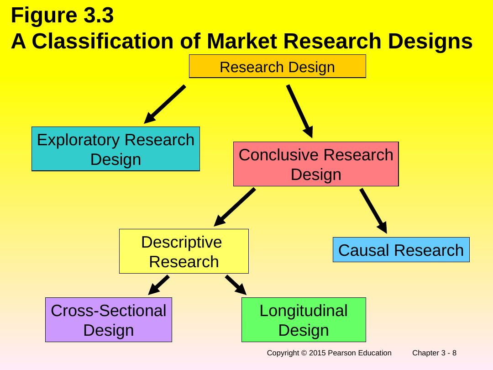
Loose, flexible, used to gain insight.
Word recreation of the Figure 3.3 tree. [Slide: ch3 s.8]
Table 3.1 contrasts the two families across six rows. Reproduced in full:
| Exploratory | Conclusive | |
|---|---|---|
| Objective | To provide insights and understanding. | To test specific hypotheses and examine relationships. |
| Characteristics | Information needed is defined only loosely. Research process is flexible and unstructured. Sample is small and nonrepresentative. Data analysis is qualitative. | Information needed is clearly defined. Research process is formal and structured. Sample is large and representative. Data analysis is quantitative. |
| Findings | Tentative. | Conclusive. |
| Outcome | Generally followed by further exploratory or conclusive research. | Findings used as input into decision making. |
Reproduced from Table 3.1, "Differences Between Exploratory and Conclusive Research" (and its continuation slide). [Slide: ch3 s.9] [Slide: ch3 s.10]
Uses of exploratory research: formulate a problem or define it more precisely; identify alternative courses of action; develop hypotheses; isolate key variables and relationships for further examination; gain insights for developing an approach to the problem; establish priorities for further research. [Slide: ch3 s.11]
Methods of exploratory research: survey of experts (Ch.2), pilot surveys (Ch.2), secondary data analysis (Ch.3), and qualitative research (Ch.4). [Slide: ch3 s.12]
Descriptive research describes things. Its uses: describe the characteristics of relevant groups (consumers, salespeople, organizations, market areas); estimate the percentage of units in a population exhibiting a certain behavior; determine perceptions of product characteristics; determine the degree to which marketing variables are associated; and make specific predictions. [Slide: ch3 s.14]
Major types of descriptive studies: sales studies (market potential, market share, sales analysis), consumer perception & behavior studies (image, product usage, advertising, pricing), and market characteristic studies (distribution, competitive analysis). [Slide: ch3 s.13] Its methods: surveys (Ch.5), panels (Ch.3 and 5), and observational & other data (Ch.5). [Slide: ch3 s.15]
Descriptive research comes in two time-shapes. The definitions to memorise:
A cross-sectional design involves the collection of information from any given sample of population elements only once. [Slide: ch3 s.16]
In a longitudinal design, a fixed sample (or samples) of population elements is measured repeatedly on the same variables. A longitudinal design differs from a cross-sectional design in that the sample or samples remain the same over time. [Slide: ch3 s.16]
Sample Surveyed at T1 — one snapshot, taken once.
Sample Surveyed at T1 → the same sample also Surveyed at T2 — repeated over time.
Recreation of Figure 3.4, "Cross-Sectional vs. Longitudinal Designs." [Slide: ch3 s.17]
Figure 3.5 splits conclusive research into descriptive and causal and names what each establishes: descriptive establishes association ("X and Y vary together"); causal establishes cause and effect ("X is a cause of Y"). [Slide: ch3 s.18]
X and Y Vary Together
X is a Cause of Y
Recreation of Figure 3.5, "Descriptive versus Causal Research." [Slide: ch3 s.18]
Uses of causal research: to understand which variables are the cause (independent variables) and which are the effect (dependent variables) of a phenomenon; and to determine the nature of the relationship between the causal variables and the effect to be predicted. Its method is the experiment (Ch.6). [Slide: ch3 s.19]
Designs are not used in isolation. Figure 3.6's "Some Alternative Research Designs" slide shows three valid sequences: (a) exploratory → conclusive; (b) conclusive alone; (c) conclusive → exploratory (to help interpret results). [Slide: ch3 s.20]
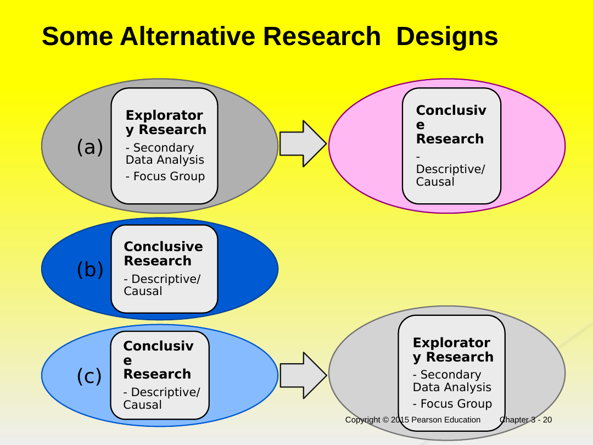
The second half of the chapter pivots to data sources. Two definitions anchor everything:
Primary data are originated by a researcher for the specific purpose of addressing the problem at hand. The collection of primary data involves all six steps of the marketing research process. [Slide: ch3 s.21]
Secondary data are data which have already been collected for purposes other than the problem at hand. These data can be located quickly and inexpensively. [Slide: ch3 s.21]
Table 3.2 compares the two on four dimensions:
| Primary Data | Secondary Data | |
|---|---|---|
| Collection purpose | For the problem at hand | For other problems |
| Collection process | Very involved | Rapid and easy |
| Collection cost | High | Relatively low |
| Collection time | Long | Short |
Reproduced from Table 3.2, "A Comparison of Primary and Secondary Data." [Slide: ch3 s.22]
Uses of secondary data: identify the problem; better define the problem; develop an approach to the problem; formulate an appropriate research design (e.g. by identifying key variables); answer certain research questions and test some hypotheses; and interpret primary data more insightfully. [Slide: ch3 s.23]
Because secondary data was collected for someone else's purpose, you must evaluate it before trusting it. Six criteria, captured by the acronym SECOND:
| Criterion | Issues to check | Remarks / why it matters |
|---|---|---|
| Specifications / Methodology | Data collection method, response rate, quality, sampling technique, size, questionnaire design, field work, data analysis | Data should be reliable, valid, and generalizable to the problem at hand. [Slide: ch3 s.24] [Slide: ch3 s.25] |
| Error — accuracy | Examine errors in approach, research design, sampling, data collection, data analysis, reporting | Assess accuracy by comparing data from different sources. [Slide: ch3 s.25] |
| Currency — when collected | Time lag between collection and publication; frequency of updates | Census data are periodically updated by syndicated firms. [Slide: ch3 s.25] |
| Objective — why collected | Why were the data collected? | The objective will determine the relevance of the data. [Slide: ch3 s.26] |
| Nature — content | Definition of key variables, units of measurement, categories used, relationships examined | Reconfigure the data to increase their usefulness, if possible. [Slide: ch3 s.26] |
| Dependability | Expertise, credibility, reputation, and trustworthiness of the source | Data should be obtained from an original rather than an acquired source. [Slide: ch3 s.26] |
The six criteria appear on the "Criteria for Evaluating Secondary Data" slides; the SECOND acronym packages them. [Slide: ch3 s.24] [Slide: ch3 s.50]
Secondary data is then classified by where it comes from. Figure 3.6 splits it into internal and external sources:
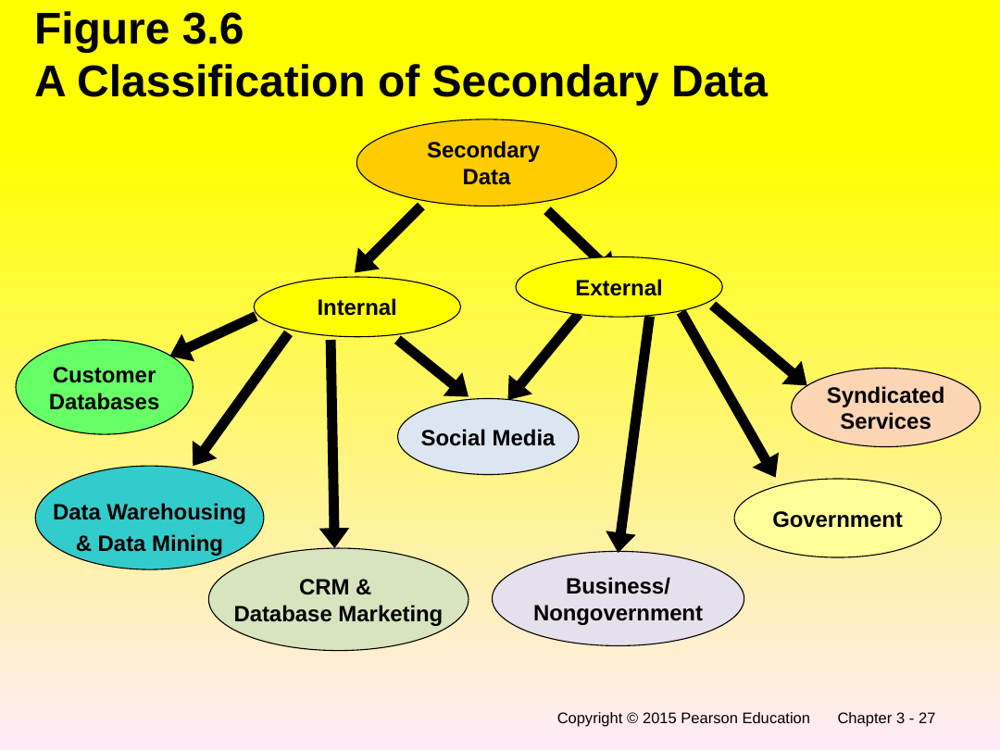
Word recreation of the Figure 3.6 tree. [Slide: ch3 s.27]
Internal secondary data example — the book's "Department Store Project" analysed sales by: product line; major department (e.g., men's wear, house wares); specific stores; geographical region; cash versus credit purchases; specific time periods; size of purchase; and sales trends across these classifications. [Slide: ch3 s.28]
Syndicated firms also sell rich individual / household-level data, split into demographic and psychographic types:
| I. Demographic data | II. Psychographic / lifestyle data |
|---|---|
| Identification (name, address, telephone number); sex; marital status; names of family members; age (including ages of family members); income; occupation; number of children present; home ownership; length of residence; number and make of cars owned. [Slide: ch3 s.29] | Interest in: golf; winter skiing; book reading; running; bicycling; pets; fishing; electronics; cable television. [Slide: ch3 s.29] |
External, business/nongovernment sources are classified into guides, directories, indices, and statistical data. [Slide: ch3 s.30] Government data is often organised geographically; Figure (Geographic Subdivision of an MSA) shows a metropolitan statistical area drilling down: MSA → Center City → Census Tract → Block Group → Block. [Slide: ch3 s.31]
Computerized databases are classified by access (Online, Internet, Offline) and by content. The content types: bibliographic databases (composed of citations to articles), numeric (numerical and statistical information), full-text (the complete text of source documents), directory (information on individuals, organizations, and services), and special-purpose (specialized information). [Slide: ch3 s.32] [Slide: ch3 s.33]
The chapter's biggest external category. The definition:
Syndicated services are companies that collect and sell common pools of data of known commercial value designed to serve a number of clients. [Slide: ch3 s.34]
Syndicated sources are classified by their unit of measurement — either households/consumers or institutions. [Slide: ch3 s.34] [Slide: ch3 s.36]
Data may be obtained from surveys, panels, or electronic scanner services. [Slide: ch3 s.34]
Data may be obtained from retailers, wholesalers, or industrial firms. [Slide: ch3 s.35]
Recreation of Figure 3.7, "A Classification of Syndicated Services." [Slide: ch3 s.36]
Household/consumer syndicated services (Figure 3.8) break down as:
Syndicated survey research itself is classified into periodic and panel surveys, each covering psychographic & lifestyle, advertising evaluation, and general topics. [Slide: ch3 s.38]
Institutional syndicated services (Figure 3.9) split into audit services (retailers, wholesalers) and industry services (direct inquiries, clipping services, corporate reports). [Slide: ch3 s.39]
The deck devotes a five-slide "Overview of Syndicated Services" comparison table covering characteristics, advantages, disadvantages, and uses for each type. Reproduced in full below.
| Type | Characteristics | Advantages | Disadvantages | Uses |
|---|---|---|---|---|
| Surveys | Surveys conducted at regular intervals | Most flexible way of obtaining data; information on underlying motives | Interviewer errors; respondent errors | Market segmentation; advertising theme selection, and advertising effectiveness |
| Purchase Panels | Households provide specific information regularly over an extended period of time; respondents asked to record specific behaviors as they occur | Recorded purchase behavior can be linked to the demographic/psychographic characteristics | Lack of representativeness; response bias; maturation | Forecasting sales, market share, and trends; establishing consumer profiles, brand loyalty, and switching; evaluating test markets, advertising, and distribution |
| Media Panels | Electronic devices automatically recording behavior, supplemented by a diary | Same as purchase panel | Same as purchase panel | Establishing advertising rates; selecting media program or air time; establishing viewer profiles |
| Scanner Volume Tracking Data | Household purchases are recorded through electronic scanners in supermarkets | Data reflect actual purchases; timely data; less expensive | Data may not be representative; errors in recording purchases; difficult to link purchases to elements of marketing mix other than price | Price tracking, modeling; effectiveness of in-store modeling |
| Scanner Diary Panels with Cable TV | Scanner panels of households that subscribe to cable TV | Data reflect actual purchases; sample control; ability to link panel data to household characteristics | Data may not be representative; quality of data limited | Promotional mix analyses; copy testing; new-product testing; positioning |
| Audit Services | Verification of product movement by examining physical records or performing inventory analysis | Relatively precise information at the retail and wholesale levels | Coverage may be incomplete; matching of data on competitive activity may be difficult | Measurement of consumer sales and market share; competitive activity; analyzing distribution patterns; tracking of new products |
| Institutional / Industrial Syndicated Services | Data banks on industrial establishments created through direct inquiries of companies, clipping services, and corporate reports | Important source of information on industrial firms; particularly useful in initial phases of the projects | Data is lacking in terms of content, quantity, and quality | Determining market potential by geographic area; defining sales territories; allocating advertising budget |
Every cell reproduced verbatim across the five "Overview of Syndicated Services" slides. [Slide: ch3 s.40] [Slide: ch3 s.41] [Slide: ch3 s.42] [Slide: ch3 s.43]
Single-source data is the pay-off of combining syndicated sources:
Single-source data provide integrated information on household variables, including media consumption and purchases, and marketing variables, such as product sales, price, advertising, promotion, and in-store marketing effort. [Slide: ch3 s.44]
How it is assembled: recruit a test panel of households and meter each home's TV sets; survey households periodically on what they read; track grocery purchases by UPC scanners; and track retail data such as sales, advertising, and promotion. [Slide: ch3 s.44]
The salient characteristics of syndicated data are packaged in the acronym SYNDICATED:
Three concept-map slides (Figures 3.13, 3.14, 3.15) summarise the chapter visually. They are embedded with word summaries beneath.
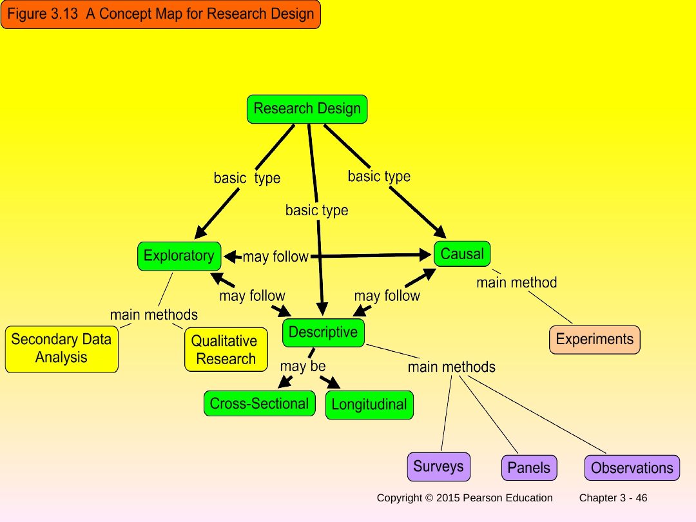
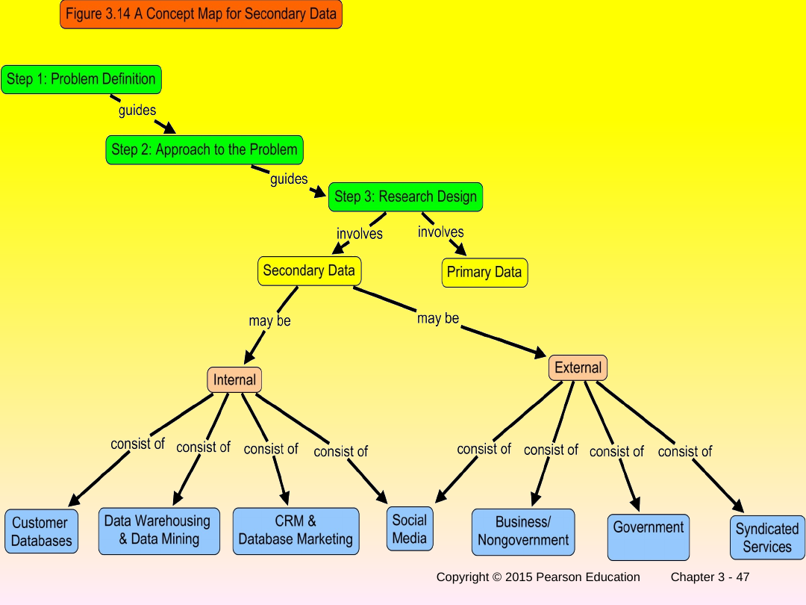
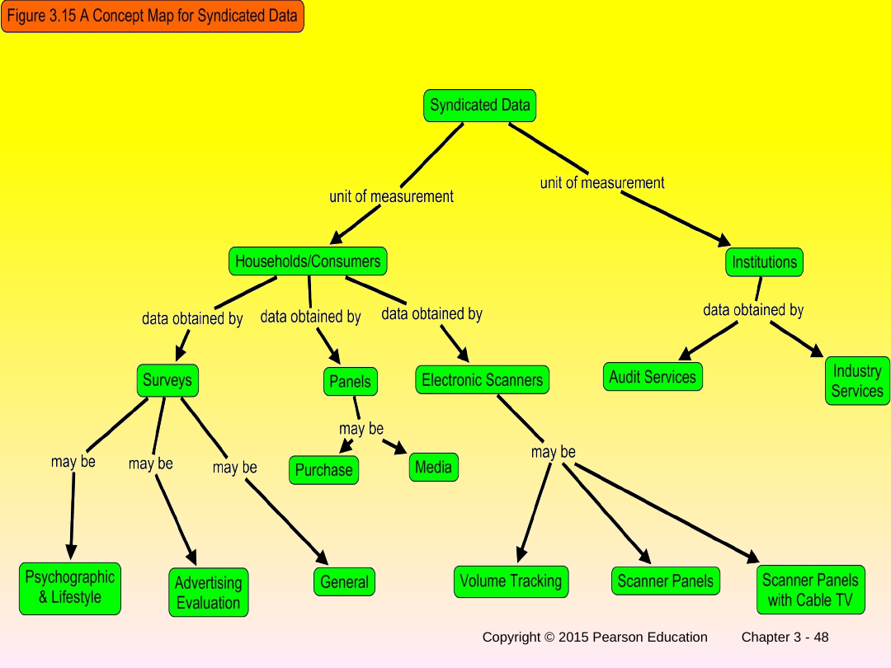
| Concept A | Concept B | Key difference |
|---|---|---|
| Exploratory research | Conclusive research | Exploratory = insight/understanding, loose & flexible, small nonrepresentative sample, qualitative, tentative findings. Conclusive = test hypotheses, formal & structured, large representative sample, quantitative, conclusive findings used in decisions. [Slide: ch3 s.9] |
| Descriptive research | Causal research | Descriptive establishes association (X and Y vary together); causal establishes cause and effect (X is a cause of Y) and uses experiments. [Slide: ch3 s.18] |
| Cross-sectional design | Longitudinal design | Cross-sectional collects from a sample once (snapshot); longitudinal measures the same fixed sample repeatedly over time (movie). [Slide: ch3 s.16] |
| Primary data | Secondary data | Primary = collected fresh for the problem at hand (involved, high cost, long). Secondary = already collected for other purposes (rapid, low cost, short). Start with secondary. [Slide: ch3 s.21] [Slide: ch3 s.22] |
| Internal secondary data | External secondary data | Internal = generated inside the organisation (customer databases, CRM, data warehousing). External = from outside (government, business/nongovernment, syndicated services). [Slide: ch3 s.27] |
| Syndicated services | Single-source data | Syndicated services sell a common data pool to many clients; single-source data integrates several syndicated sources into one household-level picture (media + purchases + marketing variables). [Slide: ch3 s.34] [Slide: ch3 s.44] |
| Slide | Banner / title | Portal section |
|---|---|---|
| 1 | Chapter 3 title | Chapter header |
| 2 | Figure 3.1 Relationship of chapter to MR process | §1 |
| 3 | Step 3 enlarged | §1 |
| 4 | Figure 3.2 Steps leading to research design | §1 (iterative loop) |
| 5 | Research Design: Definition | §1 (verbatim + builder callout) |
| 6 | Components of a Research Design (list) | §1 |
| 7 | Components of a Research Design (flow) | §1 |
| 8 | Figure 3.3 Classification of research designs | §2 (figure + tree) |
| 9 | Table 3.1 Exploratory vs Conclusive | §3 (table) |
| 10 | Table 3.1 Cont. | §3 (table continuation) |
| 11 | Uses of Exploratory Research | §3 |
| 12 | Methods of Exploratory Research | §3 (Nokia callout) |
| 13 | Major Types of Descriptive Studies | §4 |
| 14 | Use of Descriptive Research | §4 |
| 15 | Methods of Descriptive Research | §4 (callout) |
| 16 | Cross-sectional and Longitudinal Designs | §4 (verbatim definitions) |
| 17 | Figure 3.4 Cross-Sectional vs Longitudinal | §4 (cards) |
| 18 | Figure 3.5 Descriptive versus Causal Research | §5 (cards) |
| 19 | Uses of Causal Research | §5 (experiment callout) |
| 20 | Some Alternative Research Designs | §5 (figure + a/b/c sequences) |
| 21 | Primary vs Secondary Data | §6 (verbatim definitions) |
| 22 | Table 3.2 Comparison of Primary and Secondary Data | §6 (table) |
| 23 | Uses of Secondary Data | §6 |
| 24 | Criteria for Evaluating Secondary Data | §7 (SECOND table) |
| 25 | Criteria … (Specifications, Error, Currency) | §7 (SECOND table) |
| 26 | Criteria … Cont. (Objective, Nature, Dependability) | §7 (SECOND table) |
| 27 | Figure 3.6 Classification of Secondary Data | §7 (figure + internal/external) |
| 28 | Internal Secondary Data (Department Store Project) | §7 |
| 29 | Individual/Household Level Data from Syndicated Firms | §7 (demographic/psychographic table + D&B callout) |
| 30 | Classification of Business/Nongovernment Sources | §7 (guides/directories/indices/statistical) |
| 31 | Geographic Subdivision of an MSA | §7 (MSA→Block drill-down) |
| 32 | A Classification of Computerized Databases | §7 |
| 33 | Classification of Computerized Databases (defs) | §7 (bibliographic/numeric/full-text/directory/special) |
| 34 | Syndicated Services (definition) | §8 (verbatim + unit of measurement) |
| 35 | Syndicated Services Cont. (institutional) | §8 (Institutions card + callout) |
| 36 | Figure 3.7 Classification of Syndicated Services | §8 (cards) |
| 37 | Figure 3.8 Syndicated Services: Households/Consumers | §8 (surveys/panels/scanners breakdown) |
| 38 | Classification of Syndicated Survey Research | §8 (periodic/panel) |
| 39 | Figure 3.9 Syndicated Services: Institutions | §8 (audit/industry services) |
| 40 | Overview of Syndicated Services (Surveys, Purchase Panels) | §8 (full comparison table) |
| 41 | Overview … Cont. (Media Panels, Scanner Volume Tracking) | §8 (full comparison table) |
| 42 | Overview … Cont. (Scanner Diary w/ Cable TV, Audit Services) | §8 (full comparison table) |
| 43 | Overview … Cont. (Institutional Syndicated Services) | §8 (full comparison table + combine callout) |
| 44 | Single-Source Data | §8 (verbatim + how assembled) |
| 45 | Single-Source Data Application | §8 (P&G callout) |
| 46 | Figure 3.13 Concept Map for Research Design | §8 (embedded + word summary) |
| 47 | Figure 3.14 Concept Map for Secondary Data | §8 (embedded + word summary) |
| 48 | Figure 3.15 Concept Map for Syndicated Data | §8 (embedded + word summary) |
| 49 | Acronym: DESIGN | §1 (mnemonic) |
| 50 | Acronym: SECOND | §7 (mnemonic) |
| 51 | Acronym: SYNDICATED | §8 (mnemonic) |